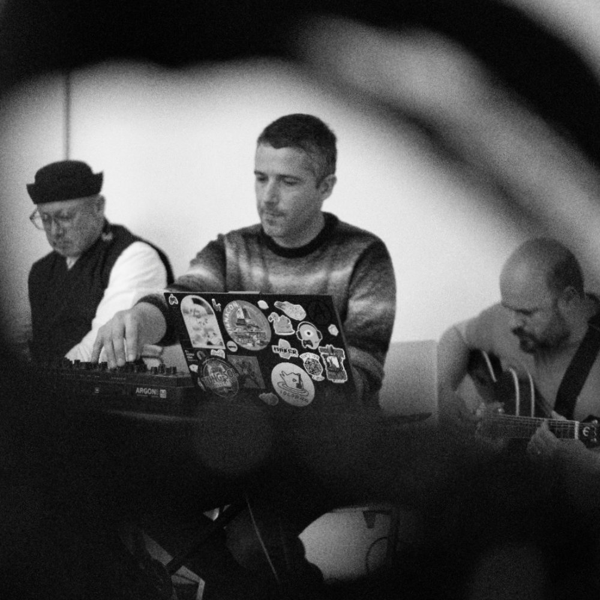

improvisation · electroacoustic · Porto
Zarhana is a trio that works at the edge of tuning systems and silence.
Ihab Mahna (Egypt/Canada) brings a rhythmic vocabulary drawn from multiple continents. Paulo Ferreira (Portugal) shapes the space between sounds with electronics that listen as much as they speak. David Marques (Portugal) moves between electric guitar, bass and — on occasion — the Portuguese guitar, an instrument he approaches less as a cultural reference and more as a source of microtonal possibility: strange tunings, sustained drones, the friction of semitones held long enough to become something else.
Their practice is improvisational but not formless. Influence is audible — Reich's patience, Eno's instinct for atmosphere, Hassell's willingness to let traditions dissolve into each other — but Zarhana doesn't sound like any of them. It sounds like a conversation that couldn't have happened anywhere else.

We are open to hearing what you're working on — finished, half-formed, or just an idea with nowhere to go yet.
Spotify
Zarhana on SpotifyBandcamp
zarhana.bandcamp.comPress & booking
Bio & press kit (PDF)